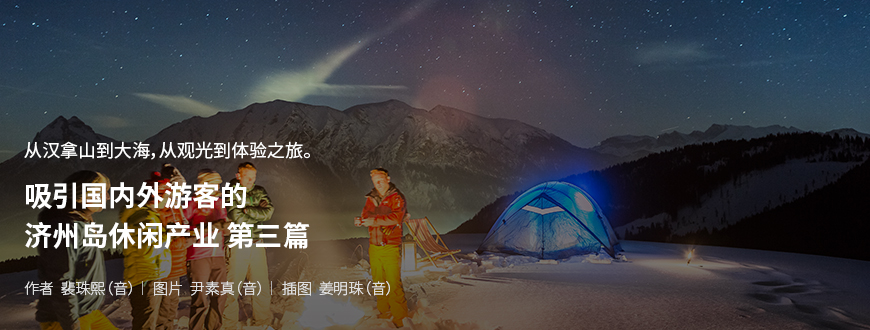
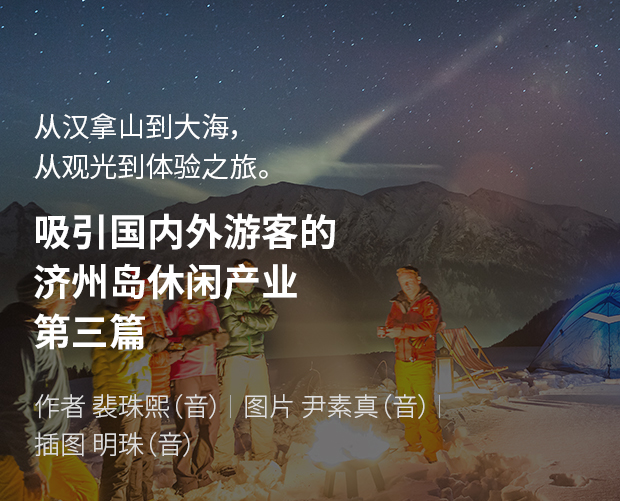
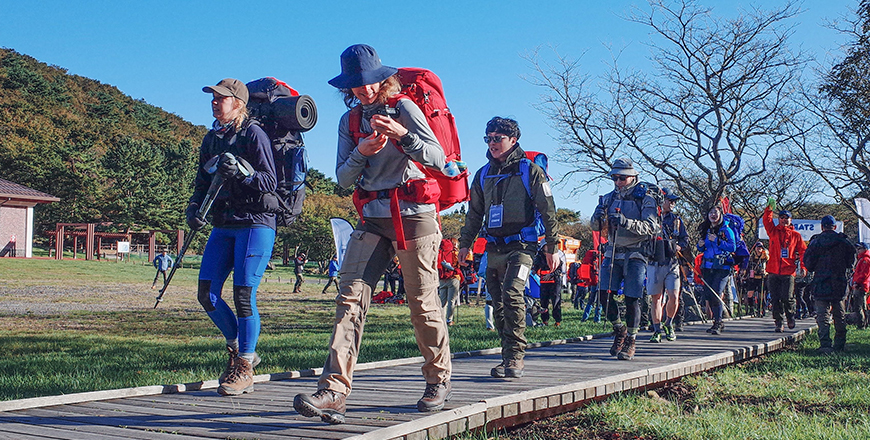
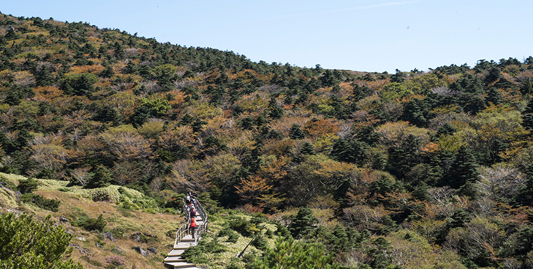
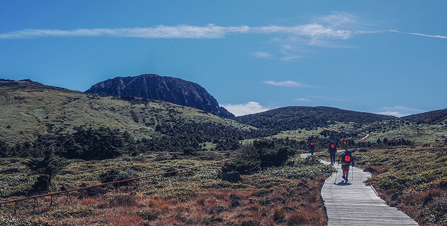

기획취재콘텐츠
- Home
- 제주라이프
- 기획취재콘텐츠
吸引国内外游客的济州岛休闲产业. 第三篇새로운 글



享受自然、学习爱护自然的自然主义健行——瑞典北极狐经典穿越之旅
<瑞典北极狐经典穿越之旅>是由瑞典户外品牌瑞典北极狐主办的健行探险活动，旨在让更多的人享受大自然，并借此更加爱护自然。这也是单一品牌举行的规模最大的健行活动。拥有15年历史的瑞典北极狐为全世界数千名健行族提供了在欧洲、亚洲、北美大陆体验各种气候和自然的机会，通过健行获得成就感的同时，学习爱护自然并了解自然的重要性。

- 由世界各国的健行族参与的2019瑞典北极狐经典穿越之旅 ⓒ瑞典北极狐穿越之旅韩国站 -
2005年始于瑞典的“瑞典北极狐经典穿越之旅”为了能让更多的人在不同地区享受大自然，继丹麦、美国、香港之后，将韩国指定为了第五个举办国家与地区。在2019年10月9日~12日（第一次：9日~11日/第二次：10日~12日）于济州举行的“瑞典北极狐经典穿越之旅韩国站”上，足足有400多名（韩国人300名，外国人100名）参加，全程60千米。路线为△第一天：御里牧 – 上三岳 – 顿乃克（顿乃克鸳鸯露营场露营）；△第二天：顿乃克 – 冬柏路 – 戊午法井寺（下院村露营场露营）；△第三天：戊午法井寺 – 石岳路 – 天娥林道 – Hebron Hill度假村（终点）
扩张至韩国的瑞典北极狐经典穿越之旅之“在济州”
在韩国举办瑞典北极狐经典穿越之旅的契机虽然与“在不同环境下扩张举办国，让更多人享受自然环境”的品牌哲学相通，但值得一提的是热情的韩国健行族也在其中起到了重要的作用。
每年有200名以上韩国人会参加瑞典北极狐经典穿越之旅。香港站中参加的韩国人就占了一半以上，丹麦站也有50人以上参加。从各国参加人数的排名来看会更加明显。在瑞典站中韩国人居第5位、在丹麦站中居第3位，在香港站居第1位。从中可知韩国的健行族对健行的热爱，这应该也是选择在韩国举办的重要原因。早在2018年曾在济州岛举行过FOX健行 ，当时瑞典的负责人也有一起参观。也许是感受到了这份热情，所以在2019年正式以济州岛为舞台举办了瑞典北极狐经典穿越之旅。
- 瑞典北极狐经典穿越之旅韩国站负责人金文起（音）
※ 3) 由瑞典北极狐主办的健行探险活动分为△经典 △极地 △FOX健行，特点如下。
- 经典：为期2天以上的健行活动，在8个国家举行，根据各国环境，举办时间、难度和期间都有所不同。是由数百到数千人参加的大规模探险活动，必须背着露营与徒步装备走完全程，且为了环境和安全，必须要遵守瑞典北极狐经典穿越之旅的规则。
- 极地：是在每年4月的5天4夜内，乘坐狗雪橇横穿北极圈300千米的冬季极限活动。会在全世界不同地区选拔20名报名者。每年有数万人报名，在Facebook上上传自己的个性影像或照片接受投票后最终胜出的人将获得参与资格，所有费用及设备均由瑞典北极狐提供。
- FOX健行：是瑞典北极狐经典穿越之旅的当地化版本，也是在韩国最受欢迎的健行探险活动。从2015年至今已连续举办10届，每年春季会在韩国各地举行。参加人数达300人，可以间接让韩国人体验到瑞典北极狐经典穿越之旅。
之所以将济州岛定为瑞典北极狐经典穿越之旅的场地，是因为济州岛是韩国最具象征性和知名度的场所，自然景观和环境毫不逊色于世界任何地方。另外，考虑到在韩国举办的瑞典北极狐经典穿越之旅中参加人数最多的会是韩国人，为了给他们提供一个可以长时间休假，通过瑞典北极狐经典穿越之旅留下深刻记忆，于是选在了济州岛。


- 健行族正走在汉拿山以壮观景色著称的御里牧，越过山脊可看到高耸挺立的白鹿潭 ⓒ瑞典北极狐穿越之旅韩国站 -
这一选择无疑是正确的。参加者们对济州岛最具象征意义的汉拿山路线表示出了极度的满意。虽然本身有点难度，但因好天气的加成，使包括外国参加者的所有人都欣赏到了别样的风景。对此，参加者们表示，第二、第三天行走汉拿山步道的美丽林道路线，比第一天的路线要轻松很多，在其中得到了治愈。瑞典北极狐韩国分社将继续规划、修改路线，使参加者们尽情享受汉拿山、步道林、大海等济州岛的自然景观。
今后也会继续创造机会让更多的人了解、爱护并享受自然
瑞典北极狐经典穿越之旅是数百名参加者在同一天、同一路线健行的活动，对此，瑞典北极狐的韩国方一再强调，如果参加者们走过的地方被毁损或留下痕迹，这将违背活动的宗旨，是绝不能妥协的部分。
在活动正式开始前，会对参加者多次说明瑞典北极狐经典穿越之旅的规则及教育等，大部分参加者都对此表示完全的接受与理解。对于通过经典穿越之旅第一次接触健行和背包旅行的参加者来说，参加活动本身就已经是可以自然而然地学习健行礼仪和保护自然的教育场所。像这样，瑞典北极狐经典穿越之旅的主办方和参加者都自觉彼此成为监督者，养成了必须要珍惜和保护自然，永久性享受的心态。
- 参加2019瑞典北极狐经典穿越之旅韩国站的健行族 ⓒ瑞典北极狐穿越之旅韩国站 -
瑞典北极狐经典穿越之旅韩国站计划每年秋天在济州岛举行，FOX健行计划每年春天在韩国内陆地区举行，之所以经常举办，是为了让更多的人懂得珍惜自然、享受自然，这一点尤为重要。从中可以确认“有了大自然，才会有人，只有懂得珍惜和享受自然的人越来越多，品牌才能持续发展”的这一瑞典北极狐的经营哲学。
瑞典北极狐计划今后在更多国家举行经典穿越之旅，在2020年又增加了英国、中国、德国等国家，总共会在8个国家举行经典穿越之旅。
※ 因新冠肺炎疫情，2020年的经典穿越之旅可能会取消或延期至2021年。
이전글
다음글